Arcade
Zum Verständnis dieses Artikels sind folgende Seiten hilfreich:
Der Begriff Arcade umfasst die Spiele, welche in Automaten gespielt werden. Meist handelt es sich hier um Spiele, die eine schnelle Reaktion erfordern, eine actionreiche Handlung aufweisen und oftmals einen Mehrspielermodus integriert haben. Das Spielprinzip ist meist relativ einfach gehalten, was aber dem Spielspaß nicht schadet. Ältester bekannter Vertreter ist das Atarispiel Pong.
Armagetron Advanced¶
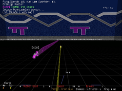
Kurzbeschreibung: Der Tron-Klon Armagetron Advanced  ist ein netzwerkfähiges Multiplayerspiel mit ähnlicher Spielweise wie der von Snake. In dem Spiel rasen die einzelnen Spieler mit einem kleinen Gefährt durch eine Landschaft und ziehen eine Lichtwand hinter sich her. Ziel des Spiels ist es, alle Gegner in die eigene Lichtwand fahren zu lassen während man selber unversehrt bleibt. Man kann das Spiel entweder alleine gegen Bots oder im Netzwerk gegen andere Mitspieler spielen.
ist ein netzwerkfähiges Multiplayerspiel mit ähnlicher Spielweise wie der von Snake. In dem Spiel rasen die einzelnen Spieler mit einem kleinen Gefährt durch eine Landschaft und ziehen eine Lichtwand hinter sich her. Ziel des Spiels ist es, alle Gegner in die eigene Lichtwand fahren zu lassen während man selber unversehrt bleibt. Man kann das Spiel entweder alleine gegen Bots oder im Netzwerk gegen andere Mitspieler spielen.
Benötigte Pakete:
armagetronad (universe)
armagetronad-common (universe)
 mit apturl
mit apturl
Paketliste zum Kopieren:
sudo apt-get install armagetronad armagetronad-common
sudo aptitude install armagetronad armagetronad-common
Optional für einen dedizierten Server:
armagetronad-dedicated (universe)
mit apturl
Paketliste zum Kopieren:
sudo apt-get install armagetronad-dedicated
sudo aptitude install armagetronad-dedicated
Briquolo¶
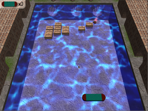
Kurzbeschreibung: Am besten einfach ansehen - sich bewegende Steine, 3D-Grafik, so kann selbst Breakout ein optisches Erlebnis werden.
Briquolo ist ein Breakout-Clone mit OpenGL-Grafik
Benötigtes Paket:
briquolo (universe)
mit apturl
Paketliste zum Kopieren:
sudo apt-get install briquolo
sudo aptitude install briquolo
BZFlag¶
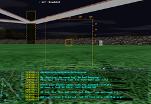
BZFlag  ist ein freies Multiplayer Panzer-Spiel, welches über das Internet gespielt wird.
ist ein freies Multiplayer Panzer-Spiel, welches über das Internet gespielt wird.
Kurzbeschreibung: Das grobe Ziel des Spiels ist es, die gegnerischen Panzer zu zerstören, welche eine andere Teamfarbe haben. Es gibt verschiedene Spieltypen (free, capture the flag und rabbit chase), die das jeweilige Spieleziel genauer definieren.
Benötigtes Paket:
bzflag (universe)
mit apturl
Paketliste zum Kopieren:
sudo apt-get install bzflag
sudo aptitude install bzflag
Circus Linux!¶
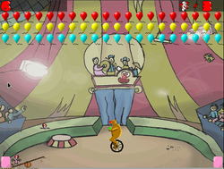
Circus Linux! ist ein Clone des alten Atari-Spiels namens "Circus".
Kurzbeschreibung: Mit Hilfe einer horizontal verschiebbaren Wippe werden Clowns in die Luft geschleudert, damit diese die am oberen Bildschirmrand befindlichen Ballons zum Platzen bringen.
Benötigtes Paket:
circuslinux (universe)
mit apturl
Paketliste zum Kopieren:
sudo apt-get install circuslinux
sudo aptitude install circuslinux
Defendguin¶
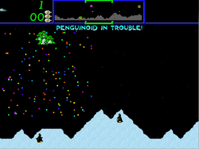
Defendguin ist ein Clone des alten Arcade-Spiels "Defender", nur mit einem Linux-Theme.
Kurzbeschreibung: Verteidige wehrlose Pinguine gegen eine Invasion aus dem All und verhindere, dass sie gefangengenommen und mutiert werden.
Benötigtes Paket:
defendguin (universe)
mit apturl
Paketliste zum Kopieren:
sudo apt-get install defendguin
sudo aptitude install defendguin
Emilia Pinball Emulator¶
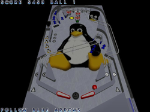
Emilia Pinball Emulator ist ein nettes Flipper-Spiel für Linux.
Benötigte Pakete:
pinball (universe)
pinball-data (universe)
mit apturl
Paketliste zum Kopieren:
sudo apt-get install pinball pinball-data
sudo aptitude install pinball pinball-data
Freedroid¶
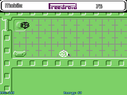
Freedroid ist eine Kopie des C64 Klassikers Paradroid .
Kurzbeschreibung: Ziel des Spiels ist es ein Raumschiff von Robotern zu befreien. Man selbst ist nur ein schwacher Roboter mit der Fähigkeit feindliche Roboter einzunehmen, was durch ein Logikspiel geschieht.
Benötigtes Paket:
freedroid (universe)
mit apturl
Paketliste zum Kopieren:
sudo apt-get install freedroid
sudo aptitude install freedroid
Frozen Bubble¶
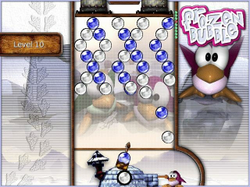
Das Spielprinzip von Frozen Bubble erinnert entfernt an Tetris.
Kurzbeschreibung: Man ist ein kleiner Pinguin und muss mit einer Luftblasenkanone bunte Luftblasen in den Himmel schießen, wo weitere bunte Luftblasen aneinander kleben. Die Zeit drängt, denn von oben herab sinkt die Decke immer tiefer. Jetzt muss versucht werden mit den farbigen Luftblasen gleichfarbige zu treffen und sie damit vom Himmel zu holen. Viele Leute meinen es sei der "Frauenmagnet" ...
Benötigtes Paket:
frozen-bubble (universe)
mit apturl
Paketliste zum Kopieren:
sudo apt-get install frozen-bubble
sudo aptitude install frozen-bubble
GLtron¶
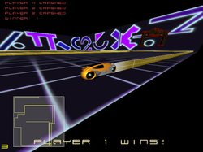
GLtron ist ein Tron-Klon in 3D. Angelehnt ist das Spiel an den Film Tron aus den 80ern. Im Laufe des Films fährt der Hauptcharakter ein Motorradrennen. Dieses bildet die Vorlage für das Spiel.
Kurzbeschreibung: Das Spiel wird von mindestens 2 Spielern gegeneinander gespielt. Das 3D-Spielfeld wird von oben gezeigt. Der Spieler baut, während er mit dem Motorrad fährt, hinter sich eine Mauer auf. Ziel ist es, alle anderen Spieler dazu zu zwingen, frontal gegen diese zu fahren ...
Benötigtes Paket:
gltron (universe)
mit apturl
Paketliste zum Kopieren:
sudo apt-get install gltron
sudo aptitude install gltron
I have no tomatoes¶
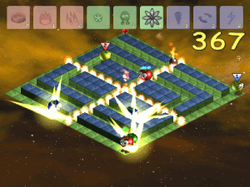
In I have no tomatoes ist das Ziel, in zehn Minuten so viele Tomaten zu sprengen wie möglich. Alleine oder zu zweit am selben Rechner legt jeder Spieler Bomben, um die Tomaten zu Muß zu verarbeiten. Verschiedene Boni wie zum Beispiel der Napalm-Angriff oder der Kartoffelmann helfen einem dabei.
tomatoes (universe)
mit apturl
Paketliste zum Kopieren:
sudo apt-get install tomatoes
sudo aptitude install tomatoes
LBreakout 2¶
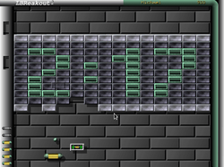
LBreakout 2 ist ein klassisches Breakout Game. Es entspricht vom Spieleprinzip her dem Atari-Klassiker Pong.
Kurzbeschreibung: Ziel des Spieles ist es, mit Hilfe des Paddles den Ball so zu lenken, dass die Mauersteine getroffen und zerstört werden. Wenn alle Steine zerstört wurden, gilt ein Level als gewonnen und das nächste Level kann beginnen. Dies ist nicht leicht - es gibt einige Überraschungen ...
Benötigtes Paket:
lbreakout2 (universe)
mit apturl
Paketliste zum Kopieren:
sudo apt-get install lbreakout2
sudo aptitude install lbreakout2
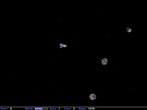
Maelstrom¶
Maelstrom ist ein Spiel nach dem Vorbild des Klassikers Asteroids. Man steuert ein kleines Raumschiff zwischen Asteroiden, feindlichen Ufos und Powerups hindurch. Einiges kann eingesammelt oder abgeschossen werden.
Benötigtes Paket:
maelstrom (multiverse)
mit apturl
Paketliste zum Kopieren:
sudo apt-get install maelstrom
sudo aptitude install maelstrom
Super Transball 2¶
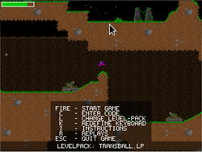
Super Transball 2 ist ein 2d Geschicklichkeitsspiel. Aufgabe ist es mit einem Raumschiff eine Kugel aus einem Tunnel heraus zu holen. Man muss aufpassen das man nicht von verschiedenen Kanonen abgeschossen wird. Man kann aber auch zurueckschießen.
Benötigtes Paket:
supertransball2 (universe)
mit apturl
Paketliste zum Kopieren:
sudo apt-get install supertransball2
sudo aptitude install supertransball2
TuxPuck¶
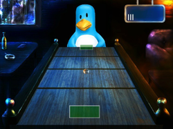
TuxPuck ist ein Geschicklichkeitsspiel, welches an den Klassiker Shufflepuck Café erinnert. Der Schläger wird mit der Maus gesteuert. Der Puck muss hinter den Schläger des Gegners gebracht werden um zu punkten.
Benötigtes Paket:
tuxpuck (universe)
mit apturl
Paketliste zum Kopieren:
sudo apt-get install tuxpuck
sudo aptitude install tuxpuck
xbill¶
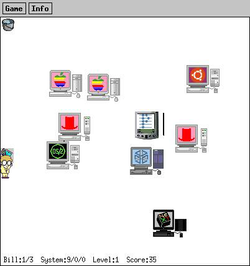
XBill ist ein Spiel, welches Ende der 1990er in der Community sehr beliebt war.
Kurzbeschreibung: Man spielt gegen Bill, ein kleines Männchen mit Brille, und dessen Klone. Man versucht diese davon abzuhalten, den Virus Wingdows auf den vorhandenen Computern zu installieren.
Benötigtes Paket:
xbill (universe)
mit apturl
Paketliste zum Kopieren:
sudo apt-get install xbill
sudo aptitude install xbill
- Erstellt mit Inyoka
-
 2004 – 2017 ubuntuusers.de • Einige Rechte vorbehalten
2004 – 2017 ubuntuusers.de • Einige Rechte vorbehalten
Lizenz • Kontakt • Datenschutz • Impressum • Serverstatus -
Serverhousing gespendet von